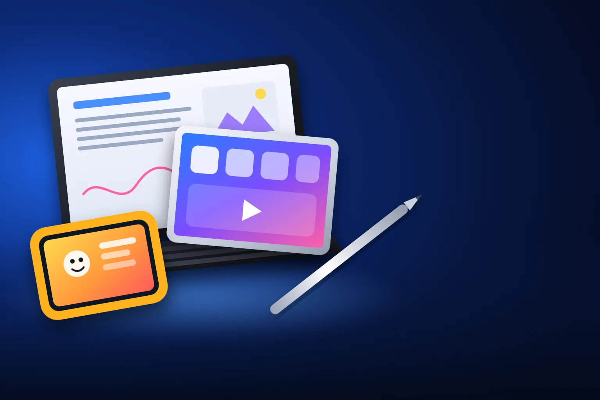

CRIANÇAS
Melhor tablet para crianças
Controle dos pais, tela que aguenta desenho animado e jogo educativo, e preço que não dói se cair no chão.

Melhor custo-benefício para criançasMulti M8 (6 GB)
CURADORIA TECHAPROVADO · 2026
Tablet para a criança, para estudar ou para desenhar e trabalhar: cada uso pede um tablet diferente, e o mais caro nem sempre é o certo. Separamos 15 modelos em 3 perfis, do custo-benefício ao top de linha, e dizemos para quem cada um vale a pena.

NOSSA LEITURA
Antes de comparar memória e processador, decida o ecossistema: quem tem iPhone aproveita mais um iPad, e quem tem celular Samsung ganha com um Galaxy Tab. Depois descubra seu perfil. E repare se a caneta vem na caixa: nos Galaxy Tab S, vem; no iPad, é vendida à parte.
COMECE POR AQUI
CRIANÇAS
Controle dos pais, tela que aguenta desenho animado e jogo educativo, e preço que não dói se cair no chão.
ESTUDO E DIA A DIA
Aula on-line, PDF, vídeo, redes sociais e streaming. O que muda de um degrau para outro é a tela, a memória e quanto tempo ele recebe atualização.

DESENHO, ANOTAÇÕES E TRABALHO
Caneta precisa, tela boa e força para editar e trabalhar com vários apps abertos. Aqui o tablet começa a substituir o notebook.

A FICHA, TRADUZIDA
01 - SISTEMA E ATUALIZAÇÕES
O tablet roda um sistema, como o celular: Android (Samsung, Lenovo, Positivo, Multi) ou iPadOS (Apple). Os dois têm os apps de estudo, streaming e redes sociais. O iPad tem mais apps feitos para tela grande, como o Procreate, de desenho; o Android dá mais liberdade, aceita cartão de memória e tem opções bem mais baratas.
O que pouca gente olha é o tempo de atualização. Os Galaxy Tab A11, A11+ e S10 Lite desta lista têm sete anos de atualização prometidos pela Samsung, e o iPad costuma receber atualização por mais de cinco anos. Tablets baratos de outras marcas recebem poucas ou nenhuma atualização.
Atualização não é só novidade: é correção de segurança e garantia de que bancos, escolas e streaming continuam funcionando. Para tablet que vai durar anos, isso vale mais que um processador um pouco mais rápido.
02 - CANETA
A caneta ativa transforma o tablet num caderno: dá para anotar, grifar PDF, desenhar e assinar documentos. Ela reconhece a pressão do traço (mais forte, linha mais grossa) e deixa a mão apoiada na tela sem riscar.
Nos Galaxy Tab S desta lista, a S Pen vem na caixa, e no S10 Lite e no S10 FE vem também a capa. No iPad, a Apple Pencil é vendida à parte, e cada modelo aceita versões diferentes: o iPad A16 aceita a Apple Pencil USB-C; o iPad Air aceita também a Apple Pencil Pro.
Canetas genéricas "capacitivas", de borracha ou de disco, funcionam em qualquer tablet, mas não têm pressão nem rejeição da palma. Para desenhar ou escrever muito, só a caneta ativa compatível faz diferença.
03 - TELA
O tamanho é medido na diagonal: 7 a 8,7 polegadas é tablet de mão, bom para criança e leitura; 10 a 11 polegadas é o tamanho de estudo; 12,4 a 14,6 polegadas é tela de trabalho e desenho, e já pede mochila.
A resolução define a nitidez. HD (1280 x 800) serve para vídeo, mas deixa texto pequeno serrilhado. Full HD (1920 x 1200) ou mais deixa PDF e livro digital confortáveis de ler. Os 90 ou 120 Hz deixam a rolagem e o traço da caneta mais suaves.
O painel muda a cor. LCD é o comum. AMOLED, nos Galaxy Tab S10+, S11 e S10 Ultra, acende cada ponto sozinho, com preto de verdade e cores mais vivas, o que pesa para foto, vídeo e desenho.
04 - MEMÓRIA E ESPAÇO
A RAM é a memória de trabalho: com mais RAM, mais apps ficam abertos sem recarregar quando você volta para eles. O armazenamento é onde ficam apps, fotos, vídeos e PDFs.
Para criança e uso leve, 4 GB de RAM dão conta. Para estudo com vários apps, 6 GB. Para desenho e trabalho pesado, 8 a 12 GB. No espaço, 64 GB enchem rápido; 128 GB são o mínimo confortável, e o cartão de memória resolve nos Android.
Cuidado com a RAM "virtual" ou "expandida" do anúncio: é um pedaço do armazenamento usado como memória, bem mais lento. Um tablet de "6 GB (4 + 2)" se comporta como um de 4 GB.
05 - CONTROLE DOS PAIS
Todo Android tem o Family Link, app gratuito do Google em que os pais definem tempo de uso, aprovam apps e veem a localização. Alguns tablets, como o Multi M8, já vêm com o Google Kids Space, um ambiente com apps e livros para crianças; os Galaxy têm o Samsung Kids.
No iPad, o Tempo de Uso faz o mesmo e mais: limite por app, horário de descanso e o "Pedir para Comprar", que manda para o celular dos pais cada app que a criança quer baixar. Funciona melhor se os pais usam iPhone.
Nenhum controle substitui a conversa e uma regra clara de horário. E capa emborrachada é tão importante quanto o app: queda é o que mais estraga tablet de criança.
06 - TABLET NO LUGAR DO NOTEBOOK
Com teclado e um modo de janelas (o DeX nos Samsung, o iPadOS com janelas no iPad), o tablet faz e-mail, texto, planilha, apresentação e reunião. Para quem viaja, é mais leve e a bateria dura mais.
Ele não substitui o notebook em programas que só existem para computador: alguns sistemas de empresa, programas de engenharia, jogos de PC e desenvolvimento de software. Antes de trocar, confira se os apps que você usa existem para tablet.
Some o teclado no preço: nos Galaxy Tab S10+ e S10 Ultra e nos iPads, ele é vendido à parte. O Galaxy Tab S11 desta lista é o único com capa teclado inclusa no anúncio.
07 - 4G E 5G
A maioria dos tablets é só Wi-Fi. A versão com chip (4G ou 5G) usa internet móvel como o celular e custa mais. Nesta lista, o Positivo Vision Tab 10 é o único com 4G.
Para quem usa o tablet em casa, na escola ou no trabalho com Wi-Fi, não precisa. E o celular pode compartilhar a internet com o tablet (roteador do celular) quando necessário.
Vale o chip para quem passa muito tempo fora de Wi-Fi, como em viagem, no ônibus ou em visita a cliente, e não quer gastar a bateria do celular compartilhando internet.
A CURADORIA EM DETALHE
15 modelos da pesquisa
PERFIL · 5 MODELOS, DA ENTRADA AO TOP DE LINHA
Para criança, o tablet precisa de três coisas: um modo infantil ou controle dos pais que funcione, desempenho suficiente para vídeo e jogo educativo sem travar e um preço compatível com o risco de queda. A escada começa num tablet de 7 polegadas para os pequenos, passa por um modelo com o Google Kids Space já instalado e termina num iPad, que tem o controle dos pais mais completo e dura anos.

CRIANÇAS · ENTRADA 1 de 5
Tela de 7" · 3 GB de RAM · 64 GB com cartão de até 512 GB
Ver preço na AmazonPOR DENTRO DA ESCOLHA
O tablet mais simples que ainda vale a compra: tela IPS de 7 polegadas com laminação (a imagem fica mais próxima do vidro), processador de oito núcleos, 3 GB de RAM e 64 GB de espaço, que aceitam cartão de memória de até 512 GB para guardar desenhos e jogos.
O Vision Tab 7 é a porta de entrada: barato, leve e com memória de verdade, sem RAM "virtual" na conta. Ele cumpre o papel de tela para desenho animado e jogo educativo, e o cartão de memória resolve a falta de espaço. O limite é a tela pequena e simples e o Android Go. Se a criança já lê e joga mais, o M8 do terceiro degrau tem tela maior e mais nítida.
| Tela | 7" IPS, 1024 x 600 |
|---|---|
| Processador | Octa-core |
| Memória | 3 GB de RAM |
| Armazenamento | 64 GB + cartão de até 512 GB |
| Bateria | 3.100 mAh |
| Sistema | Android 14 Go |
| Conexão | Só Wi-Fi |
Fonte: ficha e descrição do anúncio, conferidas em 12/11/2026. Dados informados pelo fabricante.

CRIANÇAS · ALTERNATIVA 2 de 5
Outro caminho: tablet temático para os pequenos
Tablet infantil temático · tela de 7" · 4 GB de RAM · 64 GB
Ver preço na AmazonPOR DENTRO DA ESCOLHA
O tablet com o visual da Patrulha Canina, do Chase: tela de 7 polegadas, 4 GB de RAM, 64 GB de espaço e Android 13. O tema é a graça para os menores, que costumam cuidar melhor do que é "deles".
É um desvio da escada, não um degrau acima: por dentro, ele é parecido com o Vision Tab 7, com 1 GB a mais de RAM. O que você paga a mais é o tema. Para os pequenos, isso pode valer, porque a criança se apega ao tablet. Se o objetivo é desempenho e tela maior pelo mesmo dinheiro, o M8 do próximo degrau entrega mais.
| Tela | 7" |
|---|---|
| Processador | Quad-core |
| Memória | 4 GB de RAM |
| Armazenamento | 64 GB |
| Bateria | 2.800 mAh |
| Sistema | Android 13 |
| Modelo | NB421 |
Fonte: ficha e descrição do anúncio, conferidas em 12/11/2026. Dados informados pelo fabricante.
CRIANÇAS · CUSTO-BENEFÍCIO 3 de 5
Melhor custo-benefício para crianças
Tela de 8" HD · Google Kids Space · Android 13
Ver preço na AmazonPOR DENTRO DA ESCOLHA
O salto é tela e modo infantil pronto: 8 polegadas com resolução 1280 x 800, bem mais nítida que a dos degraus anteriores, processador de oito núcleos, 64 GB, entrada USB-C e o Google Kids Space já instalado, com apps e livros escolhidos para crianças.
O M8 é onde o dinheiro rende mais neste perfil. A tela de 8 polegadas mais nítida faz diferença para ler e desenhar, e o Kids Space resolve o controle dos pais sem instalar nada. Não espere desempenho de tablet de marca grande, mas para vídeo, jogo educativo e escola ele dá conta. Para quem quer atualização por muitos anos, o Galaxy Tab A11 é o próximo passo.
| Tela | 8", 1280 x 800 |
|---|---|
| Processador | Octa-core |
| Memória | 4 GB de RAM + 2 GB virtuais |
| Armazenamento | 64 GB |
| Modo infantil | Google Kids Space instalado |
| Sistema | Android 13 |
| Conector | USB-C |
| Modelo | NB426 |
Fonte: ficha e descrição do anúncio, conferidas em 12/11/2026. Dados informados pelo fabricante.

CRIANÇAS · INTERMEDIÁRIO 4 de 5
Tela de 8,7" 90 Hz · 7 anos de atualização · Dolby Atmos
Ver preço na AmazonPOR DENTRO DA ESCOLHA
A virada para marca grande: tela de 8,7 polegadas com 90 Hz (a rolagem fica mais suave), processador Helio G99, dois alto-falantes com Dolby Atmos e bateria de 5.100 mAh. A Samsung promete sete atualizações de sistema e sete anos de atualizações de segurança.
O Galaxy Tab A11 é o tablet infantil que cresce com a criança. Os sete anos de atualização garantem segurança e apps funcionando por muito tempo, coisa rara nessa faixa. Além do Family Link do Google, os Galaxy têm o Samsung Kids, um modo infantil com limite de tempo e apps liberados pelos pais. Para a maioria das famílias, não é preciso subir além deste.
| Tela | 8,7", 1340 x 800, 90 Hz |
|---|---|
| Processador | MediaTek Helio G99 |
| Memória | 4 GB de RAM |
| Armazenamento | 64 GB + cartão de até 2 TB |
| Bateria | 5.100 mAh |
| Som | 2 alto-falantes, Dolby Atmos |
| Atualizações | 7 de sistema e 7 anos de segurança |
| Modelo | SM-X133 |
Fonte: ficha e descrição do anúncio, conferidas em 12/11/2026. Dados informados pelo fabricante.

CRIANÇAS · TOP DE LINHA 5 de 5
Top de linha para crianças
Tela Liquid Retina de 11" · chip A16 · Tempo de Uso
Ver preço na AmazonPOR DENTRO DA ESCOLHA
O topo do perfil: tela Liquid Retina de 11 polegadas, chip A16, 128 GB, Touch ID no botão superior e câmera frontal de 12 MP que acompanha o rosto na videochamada. Aceita a Apple Pencil (USB-C) para desenhar.
O iPad é caro para criança, mas é o que mais tempo dura: roda jogos e apps educativos com folga por anos e depois vira o tablet de estudo. O controle dos pais da Apple, com Tempo de Uso e Compartilhamento Familiar, é o mais completo da seleção. Se a família já usa iPhone, tudo se configura pelo celular dos pais.
| Tela | 11" Liquid Retina, 2360 x 1640 |
|---|---|
| Chip | Apple A16 |
| Armazenamento | 128 GB |
| Desbloqueio | Touch ID |
| Câmeras | 12 MP atrás e 12 MP na frente (Center Stage) |
| Bateria | Até 10 horas de vídeo, segundo a Apple |
| Caneta | Apple Pencil (USB-C), vendida à parte |
| Conector | USB-C |
Fonte: ficha e descrição do anúncio, conferidas em 12/11/2026. Dados informados pelo fabricante.
PERFIL · 5 MODELOS, DA ENTRADA AO TOP DE LINHA
É o tablet da casa e da mochila: assistir aula, ler PDF, ver série e fazer chamada de vídeo. Aqui a escada sobe em tela (de HD para Full HD e além), em memória, que define quantos apps ficam abertos sem recarregar, e em anos de atualização. No meio do caminho entra a caneta, que muda o jeito de estudar.

ESTUDO · ENTRADA 1 de 5
Tela de 10,1" · 4 GB de RAM · 128 GB · 4G e Wi-Fi
Ver preço na AmazonPOR DENTRO DA ESCOLHA
O tablet de 10 polegadas mais barato que vale a compra, e o único da seleção com 4G nesta faixa: põe um chip e usa a internet do celular fora de casa. Tem 4 GB de RAM, 128 GB de espaço, processador de oito núcleos e bateria de 6.000 mAh.
O Vision Tab 10 entrega o básico de estudo com dois trunfos: 128 GB, o dobro do vizinho de preço, e o 4G. A capa com teclado da Positivo, vendida à parte, ajuda a digitar trabalhos. O limite é a tela HD. Se você vai ler muito e não precisa de chip, o Lenovo Tab do próximo degrau tem tela Full HD.
| Tela | 10,1" HD, 1280 x 800 |
|---|---|
| Processador | Octa-core |
| Memória | 4 GB de RAM |
| Armazenamento | 128 GB |
| Conexão | 4G, Wi-Fi AC e Bluetooth 5.0 |
| Bateria | 6.000 mAh |
| Câmeras | 13 MP atrás e 5 MP na frente |
| Modelo | T3010 |
Fonte: ficha e descrição do anúncio, conferidas em 12/11/2026. Dados informados pelo fabricante.

ESTUDO · ALTERNATIVA 2 de 5
Outro caminho: tela Full HD em vez de 4G
Tela Full HD de 10,1" · Dolby Atmos · Android 14
Ver preço na AmazonPOR DENTRO DA ESCOLHA
Pelo mesmo dinheiro, a troca é tela por 4G: 10,1 polegadas em Full HD (1920 x 1200) com 400 nits de brilho, processador Helio G85, dois alto-falantes com Dolby Atmos, bateria de 5.100 mAh e Bluetooth 5.3.
O Lenovo Tab é um desvio: em vez de subir de preço, ele troca o 4G e metade do espaço por uma tela muito melhor e som com Dolby Atmos. Para leitura e streaming em casa, é a escolha mais confortável nesta faixa. Se você quer anos de atualização e mais memória, o Galaxy Tab A11+ é o próximo degrau.
| Tela | 10,1" Full HD, 1920 x 1200, 400 nits |
|---|---|
| Processador | MediaTek Helio G85 |
| Memória | 4 GB de RAM |
| Armazenamento | 64 GB + cartão microSD |
| Som | 2 alto-falantes, Dolby Atmos |
| Bateria | 5.100 mAh |
| Conexão | Wi-Fi 5 e Bluetooth 5.3 |
Fonte: ficha e descrição do anúncio, conferidas em 12/11/2026. Dados informados pelo fabricante.
ESTUDO · CUSTO-BENEFÍCIO 3 de 5
Melhor custo-benefício para estudo
Tela de 11" 90 Hz · 6 GB de RAM · 128 GB · DeX · 7 anos de atualização
Ver preço na AmazonPOR DENTRO DA ESCOLHA
O degrau que mais rende para estudar: tela de 11 polegadas Full HD com 90 Hz, 6 GB de RAM, 128 GB (com cartão de até 2 TB), quatro alto-falantes com Dolby Atmos e bateria de 7.040 mAh. Tem o Samsung DeX, que organiza os apps em janelas, como num computador, e sete anos de atualização.
O A11+ junta o que faz um tablet durar: memória folgada, tela grande e nítida e sete anos de atualização de sistema e segurança. Os quatro alto-falantes deixam a aula e a série bem melhores que nos tablets baratos. Para quem estuda digitando ou só lendo, não precisa ir além deste.
| Tela | 11", 1920 x 1200, 90 Hz |
|---|---|
| Processador | MediaTek MT8775 (4 nm) |
| Memória | 6 GB de RAM |
| Armazenamento | 128 GB + cartão de até 2 TB |
| Bateria | 7.040 mAh (até 15 h, segundo a Samsung) |
| Som | 4 alto-falantes, Dolby Atmos |
| Recursos | Samsung DeX |
| Atualizações | 7 anos de sistema e segurança |
Fonte: ficha e descrição do anúncio, conferidas em 12/11/2026. Dados informados pelo fabricante.

ESTUDO · AVANÇADO 4 de 5
S Pen e capa na caixa · tela de 10,9" 90 Hz · 7 anos de atualização
Ver preço na AmazonPOR DENTRO DA ESCOLHA
O salto é a caneta: a S Pen e a capa Smart Book Cover vêm na caixa. O app Samsung Notes reconhece a letra, tem a "Ajuda na escrita" e resolve contas escritas à mão. A tela de 10,9 polegadas chega a 600 nits, e a bateria de 8.000 mAh aguenta o dia de aula.
O S10 Lite é o tablet de estudo completo: caneta e capa inclusas, que custariam algumas centenas de reais à parte, sete anos de atualização e a busca "Circule para pesquisar" do Google. Escrever à mão ajuda a fixar o conteúdo, e o Notes transforma a anotação em texto. Para estudar com caneta, este é o ponto de parada.
| Tela | 10,9", 2112 x 1320, 90 Hz, até 600 nits |
|---|---|
| Processador | Exynos 1380 |
| Memória | 6 GB de RAM |
| Armazenamento | 128 GB + cartão de até 2 TB |
| Bateria | 8.000 mAh |
| Na caixa | S Pen, capa Smart Book Cover e carregador de 15 W |
| Atualizações | 7 anos |
| Conexão | Wi-Fi 6 e Bluetooth 5.3 |
Fonte: ficha e descrição do anúncio, conferidas em 12/11/2026. Dados informados pelo fabricante.

ESTUDO · TOP DE LINHA 5 de 5
Top de linha para estudo
Chip M3 · Apple Pencil Pro · Apple Intelligence
Ver preço na AmazonPOR DENTRO DA ESCOLHA
O topo do perfil: o chip M3, o mesmo de notebooks MacBook, tela Liquid Retina de 11 polegadas com cores amplas (P3) e baixa reflexão, câmera frontal de 12 MP na lateral maior, que fica centralizada na videochamada, e compatibilidade com Apple Pencil Pro e Magic Keyboard.
O iPad Air é o tablet de estudo que não fica para trás: o M3 sobra para tudo que um estudante faz, inclusive edição de vídeo, e recebe atualização por muitos anos. Para quem já usa iPhone ou Mac, AirDrop e a área de transferência compartilhada economizam tempo. Para a maioria, o S10 Lite já resolve; o Air faz sentido para cursos com uso pesado de apps.
| Tela | 11" Liquid Retina, P3, True Tone |
|---|---|
| Chip | Apple M3 |
| Armazenamento | 128 GB |
| Câmeras | 12 MP na frente (Center Stage) e 12 MP atrás |
| Caneta | Apple Pencil Pro ou USB-C, vendida à parte |
| Teclado | Magic Keyboard para iPad Air, vendido à parte |
| IA | Apple Intelligence |
| Conector | USB-C |
Fonte: ficha e descrição do anúncio, conferidas em 12/11/2026. Dados informados pelo fabricante.
PERFIL · 5 MODELOS, DA ENTRADA AO TOP DE LINHA
Para quem desenha, faz anotações à mão o dia todo ou quer trocar o notebook por um tablet com teclado. O que pesa é a caneta (e se ela vem na caixa), a tela, que nos degraus de cima passa a ser AMOLED, com cor e contraste melhores, e o processador. A escada começa no tablet com caneta mais equilibrado e termina na tela de 14,6 polegadas, com desvios para quem prefere iPad ou já quer o teclado na caixa.
CANETA E TRABALHO · CUSTO-BENEFÍCIO 1 de 5
Melhor custo-benefício para desenhar e anotar
S Pen e capa na caixa · 8 GB de RAM · resistente à água (IP68)
Ver preço na AmazonPOR DENTRO DA ESCOLHA
O tablet com caneta mais equilibrado: S Pen e capa Smart Book Cover na caixa, tela de 10,9 polegadas com resolução 2304 x 1440 e 800 nits, processador Exynos 1580, 8 GB de RAM e certificação IP68, que aguenta poeira e até 30 minutos embaixo d'água.
O S10 FE entrega quase tudo que um desenhista ou estudante de arquitetura precisa: caneta precisa e inclusa, tela nítida e memória folgada. A IP68 é rara nessa faixa e conta para quem usa o tablet fora de casa. Para anotar e desenhar por hobby ou estudo, não precisa subir além deste.
| Tela | 10,9", 2304 x 1440, 90 Hz, 800 nits |
|---|---|
| Processador | Exynos 1580 (4 nm) |
| Memória | 8 GB de RAM |
| Armazenamento | 128 GB |
| Resistência | IP68 (poeira e água) |
| Na caixa | S Pen e capa Smart Book Cover |
| Câmeras | 13 MP atrás e 12 MP grande-angular na frente |
| Carregamento | Até 45 W (carregador à parte) |
Fonte: ficha e descrição do anúncio, conferidas em 12/11/2026. Dados informados pelo fabricante.

CANETA E TRABALHO · INTERMEDIÁRIO 2 de 5
Tela AMOLED de 12,4" 120 Hz · 12 GB · 256 GB · S Pen na caixa
Ver preço na AmazonPOR DENTRO DA ESCOLHA
A virada para tela AMOLED: 12,4 polegadas com 2800 x 1752 e 120 Hz, com preto de verdade, cores mais fiéis e traço mais fluido. O processador sobe para o MediaTek Dimensity 9300, com 12 GB de RAM e 256 GB. A S Pen vem na caixa.
O S10+ é onde o tablet vira ferramenta de trabalho: tela AMOLED grande, memória para apps pesados como Clip Studio e LumaFusion e o modo DeX para trabalhar em janelas. Para desenho profissional em Android, é o melhor equilíbrio entre tamanho e preço da seleção.
| Tela | 12,4" AMOLED, 2800 x 1752, 120 Hz |
|---|---|
| Processador | MediaTek Dimensity 9300 |
| Memória | 12 GB de RAM |
| Armazenamento | 256 GB |
| Câmera | 13 MP atrás e 12 MP na frente |
| Na caixa | S Pen |
| Recursos | Samsung DeX e Galaxy AI |
Fonte: ficha e descrição do anúncio, conferidas em 12/11/2026. Dados informados pelo fabricante.

CANETA E TRABALHO · ALTERNATIVA 3 de 5
Outro caminho: caneta e capa teclado já na caixa
S Pen e capa teclado na caixa · AMOLED de 11" · 12 GB · 256 GB
Ver preço na AmazonPOR DENTRO DA ESCOLHA
O tablet de trabalho que já vem pronto: o anúncio inclui a S Pen redesenhada, com ponta cônica, e a capa teclado com tecla de IA. Tela AMOLED de 11 polegadas, processador de 3 nm, 12 GB de RAM, 256 GB, bateria de 8.400 mAh, Android 16 e certificação IP68.
O S11 é um desvio para quem trabalha digitando: o processador é a geração mais nova da Samsung, e a capa teclado inclusa custaria algumas centenas de reais à parte. Com o modo DeX, ele funciona como um notebook leve. Para quem desenha mais do que digita, a tela maior do S10+ rende mais.
| Tela | 11" AMOLED |
|---|---|
| Processador | 3 nm |
| Memória | 12 GB de RAM |
| Armazenamento | 256 GB |
| Bateria | 8.400 mAh |
| Resistência | IP68 |
| Na caixa | S Pen e capa teclado, segundo o anúncio |
| Sistema | Android 16 |
Fonte: ficha e descrição do anúncio, conferidas em 12/11/2026. Dados informados pelo fabricante.

CANETA E TRABALHO · ALTERNATIVA 4 de 5
Outro caminho: iPad com tela grande e Apple Pencil
Tela de 13" · chip M3 · Apple Pencil Pro
Ver preço na AmazonPOR DENTRO DA ESCOLHA
O caminho Apple para desenho e trabalho: tela Liquid Retina de 13 polegadas com cores P3 e baixa reflexão, chip M3 e compatibilidade com a Apple Pencil Pro, que tem sensor de pressão, toque duplo e giro do pincel, e com o Magic Keyboard com trackpad.
O iPad Air de 13 polegadas é a alternativa ao Android: o Procreate e os apps criativos do iPad são a principal razão para escolher Apple para desenhar. O M3 sobra para ilustração e edição. Some a caneta no orçamento: na Samsung, ela vem na caixa.
| Tela | 13" Liquid Retina, P3, True Tone |
|---|---|
| Chip | Apple M3 |
| Armazenamento | 128 GB |
| Câmeras | 12 MP na frente (Center Stage) e 12 MP atrás |
| Caneta | Apple Pencil Pro ou USB-C, vendida à parte |
| Teclado | Magic Keyboard para iPad Air, vendido à parte |
| IA | Apple Intelligence |
Fonte: ficha e descrição do anúncio, conferidas em 12/11/2026. Dados informados pelo fabricante.

CANETA E TRABALHO · TOP DE LINHA 5 de 5
Top de linha para desenho e trabalho
Tela AMOLED de 14,6" · 12 GB · 512 GB · S Pen na caixa
Ver preço na AmazonPOR DENTRO DA ESCOLHA
O topo da escada: tela AMOLED de 14,6 polegadas (2960 x 1848, 120 Hz), quase do tamanho de uma folha A4, processador Dimensity 9300, 12 GB de RAM e 512 GB de espaço. A S Pen vem na caixa.
O S10 Ultra é para quem precisa de área de tela: com 14,6 polegadas, desenhar ou revisar uma prancha fica parecido com trabalhar no papel. Os 512 GB guardam projetos grandes sem depender de nuvem. Para a maioria, o S10+ entrega a mesma experiência em tamanho menor; o Ultra vale quando o tamanho da tela é o trabalho.
| Tela | 14,6" AMOLED, 2960 x 1848, 120 Hz |
|---|---|
| Processador | MediaTek Dimensity 9300 |
| Memória | 12 GB de RAM |
| Armazenamento | 512 GB |
| Câmera | 13 MP atrás |
| Na caixa | S Pen |
| Recursos | Samsung DeX e Galaxy AI |
Fonte: ficha e descrição do anúncio, conferidas em 12/11/2026. Dados informados pelo fabricante.
Nenhum modelo encontrado. Tente outro termo ou volte para Todos.
LADO A LADO
| Modelo | Perfil | Posição | Tela | Destaque |
|---|---|---|---|---|
| Positivo Vision Tab 7 | Crianças | Entrada | 7" IPS, 1024 x 600 | Tela de 7" · 3 GB de RAM · 64 GB com cartão de até 512 GB |
| Multi Patrulha Canina Chase | Crianças | Alternativa | 7" | Tablet infantil temático · tela de 7" · 4 GB de RAM · 64 GB |
| Multi M8 (6 GB) | Crianças | Custo-benefício | 8", 1280 x 800 | Tela de 8" HD · Google Kids Space · Android 13 |
| Samsung Galaxy Tab A11 (8,7") | Crianças | Intermediário | 8,7", 1340 x 800, 90 Hz | Tela de 8,7" 90 Hz · 7 anos de atualização · Dolby Atmos |
| Apple iPad 11" (A16, 128 GB) | Crianças | Top de linha | 11" Liquid Retina, 2360 x 1640 | Tela Liquid Retina de 11" · chip A16 · Tempo de Uso |
| Positivo Vision Tab 10 (4G) | Estudo | Entrada | 10,1" HD, 1280 x 800 | Tela de 10,1" · 4 GB de RAM · 128 GB · 4G e Wi-Fi |
| Lenovo Tab 10.1" | Estudo | Alternativa | 10,1" Full HD, 1920 x 1200, 400 nits | Tela Full HD de 10,1" · Dolby Atmos · Android 14 |
| Samsung Galaxy Tab A11+ | Estudo | Custo-benefício | 11", 1920 x 1200, 90 Hz | Tela de 11" 90 Hz · 6 GB de RAM · 128 GB · DeX · 7 anos de atualização |
| Samsung Galaxy Tab S10 Lite | Estudo | Avançado | 10,9", 2112 x 1320, 90 Hz, até 600 nits | S Pen e capa na caixa · tela de 10,9" 90 Hz · 7 anos de atualização |
| Apple iPad Air 11" (M3, 128 GB) | Estudo | Top de linha | 11" Liquid Retina, P3, True Tone | Chip M3 · Apple Pencil Pro · Apple Intelligence |
| Samsung Galaxy Tab S10 FE | Caneta e trabalho | Custo-benefício | 10,9", 2304 x 1440, 90 Hz, 800 nits | S Pen e capa na caixa · 8 GB de RAM · resistente à água (IP68) |
| Samsung Galaxy Tab S10+ | Caneta e trabalho | Intermediário | 12,4" AMOLED, 2800 x 1752, 120 Hz | Tela AMOLED de 12,4" 120 Hz · 12 GB · 256 GB · S Pen na caixa |
| Samsung Galaxy Tab S11 | Caneta e trabalho | Alternativa | 11" AMOLED | S Pen e capa teclado na caixa · AMOLED de 11" · 12 GB · 256 GB |
| Apple iPad Air 13" (M3, 128 GB) | Caneta e trabalho | Alternativa | 13" Liquid Retina, P3, True Tone | Tela de 13" · chip M3 · Apple Pencil Pro |
| Samsung Galaxy Tab S10 Ultra (512 GB) | Caneta e trabalho | Top de linha | 14,6" AMOLED, 2960 x 1848, 120 Hz | Tela AMOLED de 14,6" · 12 GB · 512 GB · S Pen na caixa |
CONSIDERAÇÕES FINAIS
Tela de 8 polegadas mais nítida e o Google Kids Space pronto, por pouco mais que um tablet de 7 polegadas.
Tela de 11 polegadas, 6 GB de RAM, quatro alto-falantes e sete anos de atualização. Quer anotar à mão? Suba para o S10 Lite, com caneta na caixa.
S Pen e capa na caixa, 8 GB de RAM e resistência à água. É o melhor custo-benefício com caneta.
Os tops de linha (iPad, iPad Air e Galaxy Tab S10 Ultra) fazem sentido para quem quer o controle dos pais mais completo, um tablet para a faculdade inteira ou uma tela grande de trabalho. Para a maioria, um tablet com sete anos de atualização no tamanho certo resolve.
Depende do uso. Para crianças, o Multi M8. Para estudo e dia a dia, o Samsung Galaxy Tab A11+. Para desenhar e anotar, o Galaxy Tab S10 FE, que já vem com a S Pen.
Se você tem iPhone, o iPad aproveita melhor o ecossistema e tem o controle dos pais mais completo. Se você quer gastar menos, usar cartão de memória ou ganhar a caneta na caixa, um Galaxy Tab rende mais. Para estudo, os dois servem.
Para os pequenos, um tablet simples com modo infantil, como o Multi M8 ou o Positivo Vision Tab 7, com capa emborrachada. Para criança maior, que vai usar por anos, o Galaxy Tab A11, com sete anos de atualização, ou o iPad, com o Tempo de Uso.
Para e-mail, texto, planilha, apresentação e reunião, sim, com um teclado. Para programas que só existem no computador, não. O Galaxy Tab S11 desta lista já vem com capa teclado, segundo o anúncio.
Vale para quem anota à mão, grifa PDF ou faz exercício de exatas. O Galaxy Tab S10 Lite traz a S Pen e a capa na caixa e é o ponto de partida mais equilibrado.
Porque ele muda várias vezes por dia. Usamos o preço só para montar a escada de cada perfil; o botão leva ao valor atualizado na loja.
TRANSPARÊNCIA EDITORIAL
Separamos os perfis pelo que as pessoas mais procuram: tablet para crianças, tablet custo-benefício para estudo e tablet com caneta para desenho e trabalho. Cada modelo precisa responder com clareza "para quem ele é o certo".
Em cada perfil há modelos em faixas de preço diferentes, e cada degrau precisa entregar algo que o anterior não entrega. Dois modelos com a mesma proposta não entram juntos.
Ficha e especificações foram conferidas nos anúncios das lojas em 12/11/2026.
Os links de compra desta página são de afiliado: se você comprar por eles, o TechAprovado pode ganhar uma comissão, sem custo adicional para você. Isso não muda a ordem nem a escolha dos produtos.
📲 GUIAS E DICAS NO SEU FEED
Dicas práticas antes de comprar, em carrosséis e vídeos curtos, sempre com link para o guia completo.